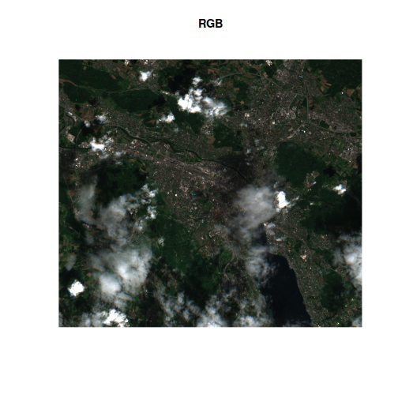
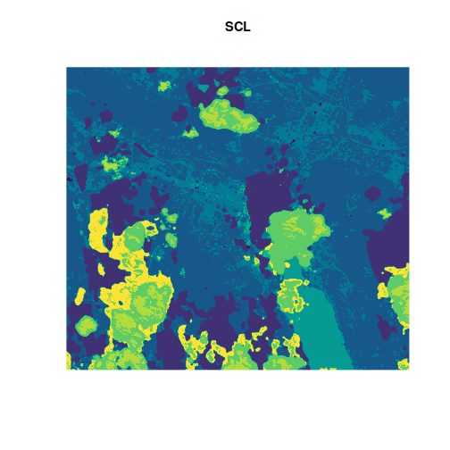
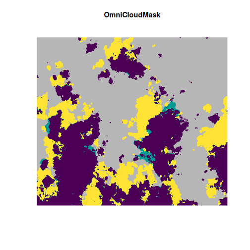
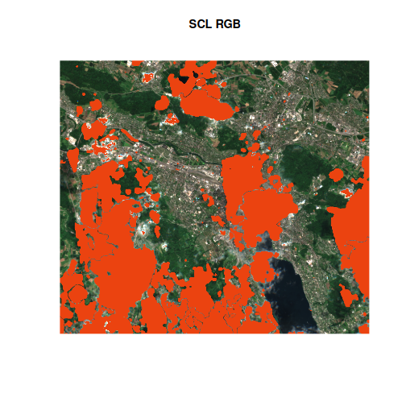
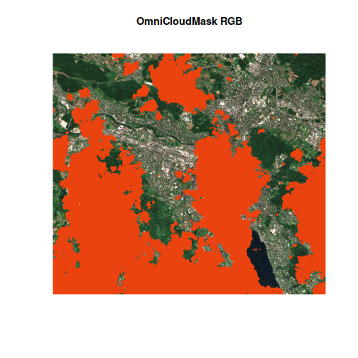
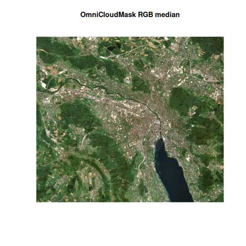

One of the most powerful features the VRT format is the ability to run any python code on a raster dataset, on the fly, using python pixel functions. The range of possible for this is massive and vrtility only scratches the surface of what is possible here.
In this vignette, we demonstrate how to use the OmniCloudMask model to generate a cloud mask for Sentinel-2 imagery.
OmniCloudMask is a Python library for state-of-the-art cloud and cloud shadow segmentation in high to moderate resolution satellite imagery. By providing only the red, green, and near-infrared bands, the model produces a cloud mask using a pre-trained convolutional neural network (CNN).
The vrtility package makes it easy to integrate
OmniCloudMask cloud masking directly into a VRT file. This approach
yields significantly better results than standard masking products
included with Sentinel-2 L2A or Landsat imagery.
In this example, we focus on the Zurich area and test the limits of both the OmniCloudMask and the standard Sentinel-2 scene classsification (SCL) band by including imagery with up to 80% cloud cover.
library(vrtility)
mirai::daemons(6)
bbox <- gdalraster::bbox_from_wkt(
wkt = "POINT (8.51 47.38)",
extend_x = 0.1,
extend_y = 0.06
)
te <- bbox_to_projected(bbox)
trs <- attr(te, "wkt")
s2_stac <- sentinel2_stac_query(
bbox = bbox,
start_date = "2024-04-01",
end_date = "2024-05-30",
max_cloud_cover = 80,
assets = c("B02", "B03", "B04", "B08", "SCL")
)
# number of items:
rstac::items_length(s2_stac)
#> [1] 9Next, let’s download all of the rasters locally. This step is not
always necessary but, in this case, we are plotting intermediate data
and we . We use with to isolate the use of mirai
daemons.
zurich_vrt <- vrt_collect(s2_stac) |>
vrt_warp(
t_srs = trs,
te = te,
tr = c(10, 10)
) |>
vrt_compute(
recollect = TRUE
)Now we are ready to create a cloud mask using the
vrt_create_mask function. This function requires two main
arguments: inbands and maskfun.
inbandsshould be a named numeric vector, where the names correspond to the required input bands for the masking function. For OmniCloudMask, these are"red","green", and"nir".maskfunspecifies the masking function to use. Currently, the only available option iscreate_omnicloudmask(), butvrt_create_maskis designed to support additional masking functions in the future.
This approach allows you to flexibly apply cloud masking to your VRT collections using state-of-the-art models.
TODO: this needs rewriting masks are now materialised immediately.
vrt_create_mask composes a new vrt file, which is then
immediately materialised. This is at odds with other materialisation in
vrtility which will normally only occur when vrt_compute()
is called. The reason for this is to ensure that expensive cloud masking
operations are only performed once.
Note that we use recollect = TRUE to return a new
vrt_collection object because we plan to do some further
processing.
zurich_vrt_mask <- zurich_vrt |>
vrt_create_mask(
inbands = c(red = 3, green = 2, nir = 4),
maskfun = create_omnicloudmask()
)Now, let’s take a look at the OmniCloudMask and the Sentinel-2 SCL bands, alongside the RGB image. We can clearly see that the OmniCloudMask is identifying a greater area of clouds and shadows.
purrr::walk2(
.x = list(c(3, 2, 1), 5, 6),
.y = c("RGB", "SCL", "OmniCloudMask"),
~ plot(
zurich_vrt_mask,
item = 6,
.x,
main = .y
)
)
Let’s examine the impact of masking on the actual image areas. We’ll apply both masks and visually compare the results to assess the performance of OmniCloudMask versus the Sentinel-2 SCL band.
When using vrt_set_maskfun(), you can specify which mask
values to treat as masked (i.e., set to NA). For the OmniCloudMask band,
the possible values are:
0: clear
1: thick cloud
2: thin cloud
3: cloud shadow
In this example, we mask all non-clear classes (values 1, 2, and 3).
scl_rgb <- zurich_vrt_mask |>
vrt_set_maskfun(
mask_band = "SCL",
mask_values = c(0, 1, 2, 3, 8, 9, 10, 11)
)
ocm_rgb <- zurich_vrt_mask |>
vrt_set_maskfun(
mask_band = "omnicloudmask",
mask_values = 1:3
)
purrr::walk2(
list(scl_rgb, ocm_rgb),
c("SCL RGB", "OmniCloudMask RGB"),
~ plot(
.x,
item = 6,
c(3, 2, 1),
main = .y,
na_col = "#eb4310"
)
)
The OmniCloudMask provides a more accurate and comprehensive identification of clouds and shadows compared to the Sentinel-2 SCL band. It also reduces false positives that are present in the SCL mask, resulting in cleaner cloud detection.
Next, we will compute the median of the RGB bands in the vrt collection for both the SCL-masked and OmniCloudMask-masked images, and plot the results to visually compare their effectiveness.
scl_median <- vrt_stack(scl_rgb) |>
vrt_set_py_pixelfun(pixfun = mean_numpy()) |>
vrt_compute()
ocm_median <- vrt_stack(ocm_rgb) |>
vrt_set_py_pixelfun(pixfun = mean_numpy()) |>
vrt_compute()
purrr::walk2(
list(scl_median, ocm_median),
list("SCL RGB median", "OmniCloudMask RGB median"),
~ plot_raster_src(
.x,
c(3, 2, 1),
main = .y,
rgb_trans = "gamma",
axes = FALSE
)
)
Comparing the two median images, the difference is striking. The
OmniCloudMask-masked composite is much clearer, while the SCL-masked
image appears “milky” due to residual cloud artefacts. Although the SCL
composite could be improved by excluding scenes with higher cloud cover,
this example highlights the significant advantage of advanced cloud
masking. Additionally, further improvements can be achieved by applying
multi-dimensional reduction techniques such as those provided by
multiband_reduce().